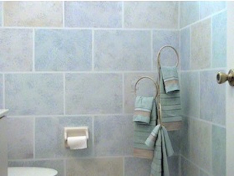
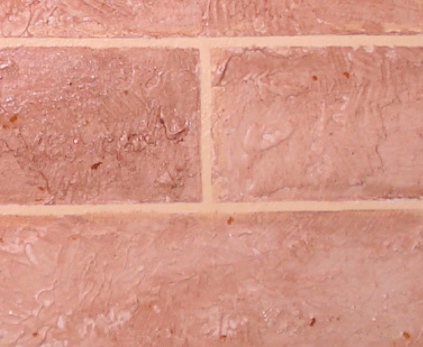

Faux painting a wall to look like brick, like most methods teach, can be very time consuming.

Since the finish looks so nice, it's worth the time. But we have good news. Now you can learn how to paint your walls to look like brick, easier.
There are many different ways you can achieve this faux finishing technique. One way is to tape off your grout lines, once you've painted your base coat. Then with either a sponge or rag, or plastic, you add the texture to the brick shapes.

As you can see in the video, with this patented (7472450) system, you can add the brick texture without mess, using the Tuck and Gather tool. Any type of fabric, foam or plastic can be tucked into this innovative tool. You just add your colors to the Multi Color Faux Palette© and then press your tool onto it and then onto the wall. Additional texture can be added by using a natural sea sponge. You may also choose use the Poofy Pad to add a color wash over the blocks after adding the faux texture with. All these great, time saving tools are included in the Basic Faux Painting Kit. If you compare how other methods achieve this faux finish, you will agree that this way is by far the fastest way to do so. You can learn how to faux paint 9 other faux finishes with the kit, also.
Go to our Faux Painting Store right now. Our BASIC KIT is now on sale for only $39.99 for a limited time. We'll also send you a link via email for a FREE Color Suggestions and Idea E-book, too. This is the perfect tool for choosing your faux painting colors.
Dear Sandy,
I may even start a little side business doing this since your kit makes it sooooo much fun AND
easy!!
Thanks again,
Matt H.⭐⭐⭐⭐⭐
Use a satin sheen base coat. Eggshell is another option since you don't need a lot of open time. However, since you will probably be using a glaze, the sheen you end up with is more like satin.

Another alternative is to use a textured paste (spackle or joint compound) over the taped blocks and then after it is dry you paint over it with your base coat latex paint. Afterwards, you use the poofy pad to add a color wash over the textured blocks. This would be more time consuming but would give you a 3 dimensional look. Click on the link below to see how to add texture to your walls using the Tuck and Gather tool. Faux Painting on Knockdown Texture Video
Watch this video of a 16 year old who never faux painted before. This will encourage you to faux it yourself.
You can't beat this!

Colossal Extreme Faux Painting Combo
Only *$175.99
FREE PRIORITY SHIPPING
Includes Basic DVD kit